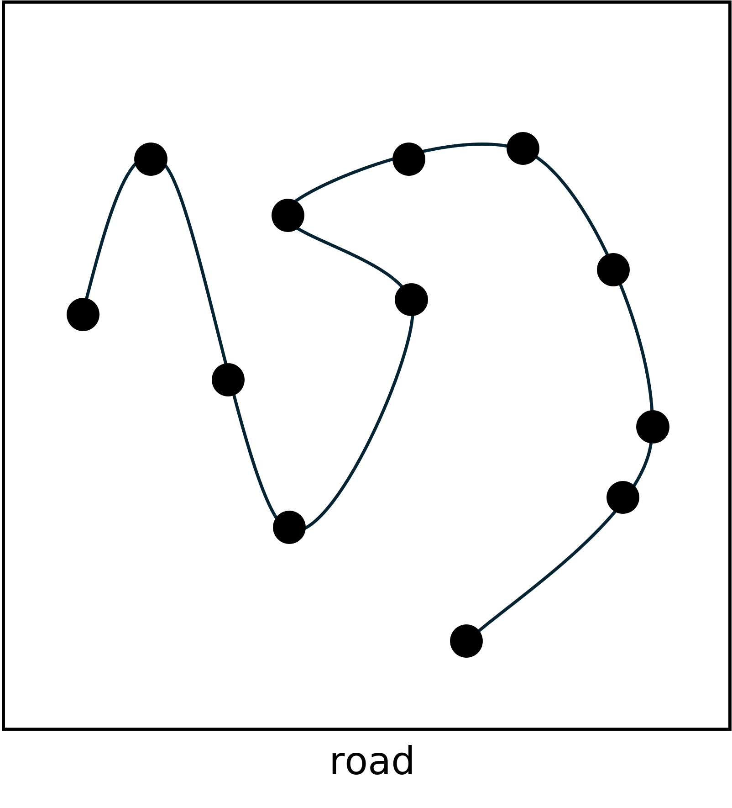

Danger Is My Middle Lane
↪ Simulations From Real-World Dangerous Roads
↪ Antony Bartlett
↪ Annibale Panichella ⤵
University of Delft, The Netherlands

The Problem
The Problem
- Driving is dangerous
- National Highway Traffic Safety Administration (NHTSA)¹
1.https://www.valuepenguin.com/car-accident-statistics
The Problem
- Driving is dangerous
- National Highway Traffic Safety Administration (NHTSA)¹
- DUI
- Speeding
- Seatbelt Nonuse
- Distracted Driving
- Hit-And-Run
- Drowziness
1.https://www.valuepenguin.com/car-accident-statistics
Nearly 1 in 10 fatal accidents are caused by distracted driving!
Can Self-Driving Cars Help?
Definitely, but…
- We’re still a long way from full self-driving
- Many news stories regarding Tesla FSD failures¹
- Cruise had a large re-call of their cars²
1.https://cleantechnica.com/2024/04/16/recent-tesla-full-self-driving-fails-just-a-blip-in-the-progress-or-endemic/
2.https://www.theguardian.com/technology/2023/nov/08/cruise-recall-self-driving-cars-gm
Definitely, but…
- We’re still a long way from full self-driving
- Many news stories regarding Tesla FSD failures¹
- Cruise had a large re-call of their cars²
- Waymo ramped up though³


1.https://cleantechnica.com/2024/04/16/recent-tesla-full-self-driving-fails-just-a-blip-in-the-progress-or-endemic/
2.https://www.theguardian.com/technology/2023/nov/08/cruise-recall-self-driving-cars-gm
3.https://consent.yahoo.com/v2/collectConsent?sessionId=3_cc-session_379fbde2-98c5-4dfd-b381-67817f2bda9f
What Are We Doing To Help
SBFT Self-Driving Competition
- Simulation based testing
- Generate roads for validation in BeamNG¹
- SBFT competition tool²
1.https://beamng.tech
2.https://github.com/sbft-cps-tool-competition/cps-tool-competition
SBFT Self-Driving Competition
- Simulation based testing
- Generate roads for validation in BeamNG¹
- SBFT competition tool²
- EvoMBT - Extended Finite State Machines³
- RIGAA - Reinforcement learning and evolutionary algorithms⁴
- RoadSign - Seeding with MOO process⁵
1.https://beamng.tech
2.https://github.com/sbft-cps-tool-competition/cps-tool-competition
2.https://ieeexplore.ieee.org/document/10190390
3.https://ieeexplore.ieee.org/document/10190408
4.https://ieeexplore.ieee.org/document/10190387
Our Approach
Sampling From Real-World Examples
- Using Google Earth¹
- Export 1km ‘dangerous’ road sections to .kml
- Retrieve road road points from the .kml
- Datapoints contain gps coordinates
1.https://earth.google.com/web/
Evolving, one road at a time
- The goal is to find out-of-bound errors
- We created two approaches
- Using SBFT’24 CPS Tool to run examples¹
- Evolve one map at a time
- Store non-dominated solutions
- Selection based on 1+1 Evolutionary Algorithm
- Evolve new map or non-dominated solution
1.https://github.com/sbft-cps-tool-competition/cps-tool-competition
Evolving, one road at a time
Evolving, one road at a time
Evolving, one road at a time

Evolving, one road at a time
Evolving, one road at a time

Evolving, one road at a time

Validating A Road
Running the road through the SBFT tool
- SBFT tool validates if the road is valid
- No intersection
- No corners too sharp
- Runs the road in BeamNG simulator
- Allow for <50% OOB
- Max speed 85 km/h
- AI aggression 1.0
Pass or fail
- Save a road that causes a failure
- Add a road to the non-dominated list
Retrieve fitness
- Save a road that causes a failure
- Add a road to the non-dominated list
- Validate the fitness of the road
Update non-dominated list
- Save a road that causes a failure
- Add a road to the non-dominated list
- Validate the fitness of the road
- Assess road for the non-dominated list with 1+1 EA
Rinse and repeat
- Start the test over
- Randomly choose to evolve a new road
- Or one from the non-dominated list
- Repeat for 8 hours
What Did We Find?
Results
- Real-world seeding saw five times more failing scenarios
- 30% more valid roads compared to random seeding
Thank you